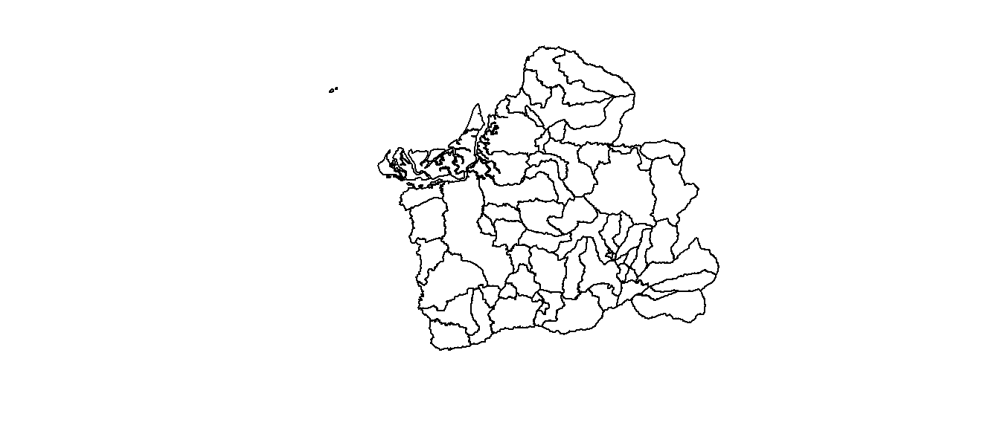

Universidad Técnica de Machala
Facultad de Ciencias Agropecuarias
Carrera de Agronomía
Geomática
Taller 5: Operaciones espaciales sobre datos vectoriales
Datos Informativos
Docente: Ing. Agr. Angel Eduardo Luna Romero
- Con el archivo Parroquias, calcular el área de la parroquias del cantón Pasaje, en las siguientes unidades: \(m^2\), \(km^2\) y \(ha\)
library(pacman)
p_load(sf, raster, sp, rgdal, tidyverse)
setwd('C:/Users/Eirck/Desktop/diarios/Fer9819.github.io/')
prq <- st_read('parroquias.shp')
names(prq)names(prq)## [1] "DPA_PARROQ" "DPA_DESPAR" "DPA_VALOR" "DPA_ANIO" "DPA_CANTON"
## [6] "DPA_DESCAN" "DPA_PROVIN" "DPA_DESPRO" "geometry"sort(unique(prq$DPA_DESPRO)) # ordena los elementos de A-Zel_oro <- prq %>% filter(DPA_DESPRO == "EL ORO" )
plot(st_geometry(el_oro))
Pasaje <- el_oro %>% filter(DPA_DESCAN == "PASAJE") %>%
dplyr::select(Canton = DPA_DESCAN, Parroquias = DPA_DESPAR)
plot(Pasaje)head(Pasaje)## Simple feature collection with 6 features and 2 fields
## Geometry type: MULTIPOLYGON
## Dimension: XY
## Bounding box: xmin: 622520.1 ymin: 9616779 xmax: 661190 ymax: 9648384
## Projected CRS: WGS 84 / UTM zone 17S
## Canton Parroquias geometry
## 1 PASAJE PASAJE MULTIPOLYGON (((631477.3 96...
## 2 PASAJE BUENAVISTA MULTIPOLYGON (((626252.7 96...
## 3 PASAJE CASACAY MULTIPOLYGON (((647122.1 96...
## 4 PASAJE LA PEAÑA MULTIPOLYGON (((629359.8 96...
## 5 PASAJE PROGRESO MULTIPOLYGON (((654465.2 96...
## 6 PASAJE UZHCURRUMI MULTIPOLYGON (((647844.6 96...# Crear un nuevo campo, area_m2
Pasaje$area_m2 <- st_area(Pasaje)
head(Pasaje)## Simple feature collection with 6 features and 3 fields
## Geometry type: MULTIPOLYGON
## Dimension: XY
## Bounding box: xmin: 622520.1 ymin: 9616779 xmax: 661190 ymax: 9648384
## Projected CRS: WGS 84 / UTM zone 17S
## Canton Parroquias geometry area_m2
## 1 PASAJE PASAJE MULTIPOLYGON (((631477.3 96... 131794123 [m^2]
## 2 PASAJE BUENAVISTA MULTIPOLYGON (((626252.7 96... 40971872 [m^2]
## 3 PASAJE CASACAY MULTIPOLYGON (((647122.1 96... 60570627 [m^2]
## 4 PASAJE LA PEAÑA MULTIPOLYGON (((629359.8 96... 16818866 [m^2]
## 5 PASAJE PROGRESO MULTIPOLYGON (((654465.2 96... 149762171 [m^2]
## 6 PASAJE UZHCURRUMI MULTIPOLYGON (((647844.6 96... 30857629 [m^2]# Para calcular en km2 se define la unidad con el uso de package units
Pasaje$area_km2 <- units::set_units(st_area(Pasaje), km^2)
head(Pasaje)## Simple feature collection with 6 features and 4 fields
## Geometry type: MULTIPOLYGON
## Dimension: XY
## Bounding box: xmin: 622520.1 ymin: 9616779 xmax: 661190 ymax: 9648384
## Projected CRS: WGS 84 / UTM zone 17S
## Canton Parroquias geometry area_m2
## 1 PASAJE PASAJE MULTIPOLYGON (((631477.3 96... 131794123 [m^2]
## 2 PASAJE BUENAVISTA MULTIPOLYGON (((626252.7 96... 40971872 [m^2]
## 3 PASAJE CASACAY MULTIPOLYGON (((647122.1 96... 60570627 [m^2]
## 4 PASAJE LA PEAÑA MULTIPOLYGON (((629359.8 96... 16818866 [m^2]
## 5 PASAJE PROGRESO MULTIPOLYGON (((654465.2 96... 149762171 [m^2]
## 6 PASAJE UZHCURRUMI MULTIPOLYGON (((647844.6 96... 30857629 [m^2]
## area_km2
## 1 131.79412 [km^2]
## 2 40.97187 [km^2]
## 3 60.57063 [km^2]
## 4 16.81887 [km^2]
## 5 149.76217 [km^2]
## 6 30.85763 [km^2]Pasaje$area_ha <- units::set_units(st_area(Pasaje), ha)
head(Pasaje)## Simple feature collection with 6 features and 5 fields
## Geometry type: MULTIPOLYGON
## Dimension: XY
## Bounding box: xmin: 622520.1 ymin: 9616779 xmax: 661190 ymax: 9648384
## Projected CRS: WGS 84 / UTM zone 17S
## Canton Parroquias geometry area_m2
## 1 PASAJE PASAJE MULTIPOLYGON (((631477.3 96... 131794123 [m^2]
## 2 PASAJE BUENAVISTA MULTIPOLYGON (((626252.7 96... 40971872 [m^2]
## 3 PASAJE CASACAY MULTIPOLYGON (((647122.1 96... 60570627 [m^2]
## 4 PASAJE LA PEAÑA MULTIPOLYGON (((629359.8 96... 16818866 [m^2]
## 5 PASAJE PROGRESO MULTIPOLYGON (((654465.2 96... 149762171 [m^2]
## 6 PASAJE UZHCURRUMI MULTIPOLYGON (((647844.6 96... 30857629 [m^2]
## area_km2 area_ha
## 1 131.79412 [km^2] 13179.412 [ha]
## 2 40.97187 [km^2] 4097.187 [ha]
## 3 60.57063 [km^2] 6057.063 [ha]
## 4 16.81887 [km^2] 1681.887 [ha]
## 5 149.76217 [km^2] 14976.217 [ha]
## 6 30.85763 [km^2] 3085.763 [ha]- Determinar los centroides de las parroquias del literal anterior con sus respectivas coordenadas y generar un buffer de 2000 m. Luego crear un buffer de 2000, 2500, 3000 y 3500 metros, respectivamente.
pts_c <- st_centroid(Pasaje %>% dplyr::select(Parroquias))
# Con st_coordinates() se determina las coordenadas de "x" & "y" al mismo tiempo
# por eso se usa los corchetes [,] para indicar la información 1 es para "x", 2 para "y"
pts_c$x <- st_coordinates(pts_c)[,1]
pts_c$y <- st_coordinates(pts_c)[,2]
# Ordenar las columnas
pts_c <- pts_c %>% dplyr::select(Parroquias, x, y)
head(pts_c)## Simple feature collection with 6 features and 3 fields
## Geometry type: POINT
## Dimension: XY
## Bounding box: xmin: 627666.2 ymin: 9625828 xmax: 655654 ymax: 9638940
## Projected CRS: WGS 84 / UTM zone 17S
## Parroquias x y geometry
## 1 PASAJE 636807.5 9625828 POINT (636807.5 9625828)
## 2 BUENAVISTA 629480.6 9627470 POINT (629480.6 9627470)
## 3 CASACAY 643272.4 9629754 POINT (643272.4 9629754)
## 4 LA PEAÑA 627666.2 9633969 POINT (627666.2 9633969)
## 5 PROGRESO 645690.0 9638940 POINT (645690 9638940)
## 6 UZHCURRUMI 655654.0 9629515 POINT (655654 9629515)pts_bf <- st_buffer(pts_c, dist = 2000)
plot(st_geometry(pts_bf), col = "blue")
plot(st_geometry(pts_c), add = T)# Crear buffer de 2000, 2500, 3000, 3500
pts_bf <- st_buffer(pts_c, dist = c(2000, 2500, 3000, 3500))
plot(st_geometry(pts_bf), col = "yellow")
plot(st_geometry(pts_c), add = T)